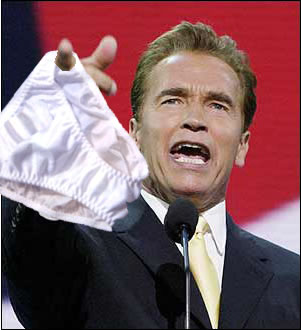
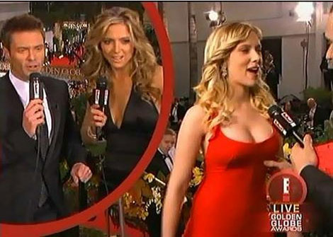
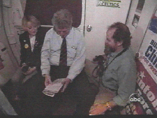
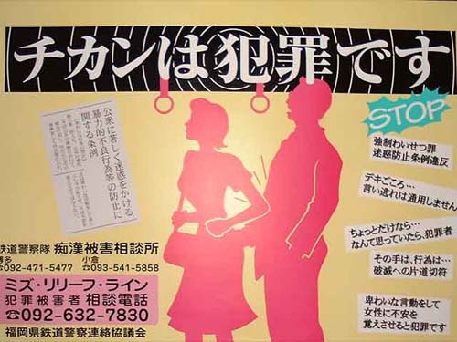
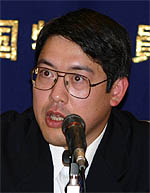
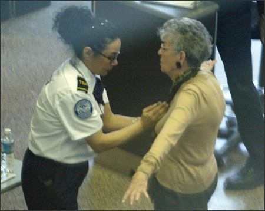
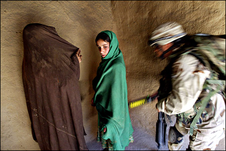
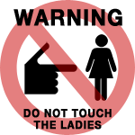

|
GropingOn a crowded subway train, perhaps the only thing more delightful than brushing up against the odd bit of tit is that half-pint of anonymous buttock you've got clenched in your fist like a Nerf football. Groping historically implies acting with uncertainty, reaching about blindly in the dark with hesitance or demonstrating a lack of confidence -- but we'll not make that mistake here today. It's the American version of frottage -- a concept the French have known about for centuries -- in which one massages or rubs the body part of another to attain sexual gratification. The name is derived from an artistic technique attributed to Max Ernst, in which a charcoal pencil is laid across paper and scratched back and forth over a textured surface. Celebrities, politicians, and groping go together like short skirts and mirrored wingtips. Actor Christian Slater was busted in May of 2005 for "forcibly touching the sexual [and other intimate] parts of another person for the purposes of degradation and abusement" as she stood in line to buy a soda. The woman indicated that he pumped up more than just than her volume, grabbing her round, ripe fanny in a manner so disturbing she was prompted to flag down a cop car. Police found him intoxicated a few blocks away, and placed him in handcuffs. "I didn't do anything," quipped the star of Untamed Heart to an assembled throng. Charges against Slater were later dropped after he threatened to sue his arresting officer and the New York City Police Department. As Arnold Schwarzenegger attempted to thrust his governor campaign into high gear during the California recall elections of 2003, allegations of improper touching grew so extreme he was nicknamed the Gropinator. As many as fifteen women stepped forward to share their stories, including an unidentified 51-year-old who said Schwarzenegger "pinned her to him and spanked her repeatedly at a West Los Angeles post-production studio". Three other women named by the Los Angeles Times said Schwarzenegger fondled them in separate incidents outside a Venice gym in the mid 1980s, at a bar in the late 1970s and on the set of the movie Predator in 1986. The day after that story broke, six women came forward to claim they were groped them between 1975 and 2000 -- including two dames who said Arnold harassed them on the set of the movie Twins. E. Laine Stockton claimed Schwarzenegger came up from behind her, reached under her T-shirt, honked her breast -- and then silently walked away. "I was just shocked, shocked to the point where I almost didn't know how to react, because it was so out of the blue and so unexpected," she told The Times. Another woman alleged Arnold pulled her into his lap and whispered "vulgarities" as other men watched and smiled. The groping reports could not have come at a worse time in Schwarzenegger's campaign, already under attack for reports that he praised Adolf Hitler as a youth. He stopped short of denying the women's accounts, insisting none of them told him (at the time) that he "went over the line." Schwarzenegger voluntarily took a training course about sexual harassment after winning the California election. He extended his apologies live to an enormous audience: "I want to prove to the women that I will be a champion for the women, a champion of the women. Yes, I have behaved badly some times, yes it is true that I was on rowdy movie sets and I have done things that were not right which I thought then was playful but now I recognize that I offended people. Those people that I have offended, I want to say to them I am deeply sorry about that and I apologize because that's not what I'm trying to do." Speaking of queers, on live television during the 2005 Golden Globe Awards, fashion designer Isaac Mizrahi groped, squeezed, fondled and paid complements to the lovely and talented tits belonging to Scarlett Johannson, both of which were displayed effortlessly in a skintight red Valentino dress. "I just wanna feel it," he squealed into the microphone. "Oh, I just love that." That same night, Mizrahi tugged on Teri Hatcher's bronze halter top to look for hidden, folded-up notes: "Come on, you've got to have the speech somewhere." Hatcher then screamed OH MY GOD HE TOUCHED MY STOMACH AND PULLED DOWN MY DRESS to no one in particular. Later, Mizrahi would inquire of Eva Longoria what her hair was like "down there" and ask Jessica Alba if she was wearing any underwear. Finally, he asked Charlize Theron about her Oscar-winning role as "a scary dyke with bad teeth". Mizrahi suffered no lasting backlash. Others are not so lucky. Galen Fox, former Republican state representative of Hawaii and state House minority leader was ordered in January of 2006 to register as a sex offender after being convicted of a mile-high grope. During a five hour flight, Fox slipped his fingers under a blanket to fondle a sleeping 27-year-old-woman's thighs and tweak her puss-puss. "I have a right to sleep on a plane without being groped," the victim wrote. Fox acknowledged that his "entire career had been ruined," and his life shattered. Former Commander in Chief Bill Clinton regularly found himself at the center of grab-and-grope hearings during the terms of his presidency. During a 1998 interview with 60 Minutes, former White House volunteer Kathleen Willey reminisced about an particularly awkward encounter. Willey alleged that while she and Clinton were alone in his private study near the Oval Office, Clinton embraced her tightly, kissed her on the mouth, fondled her breast and placed her hand on his balls. "I just remember thinking what in the world is he doing? I was just startled. I thought, well, maybe I ought to give him a good slap across the face. And then I thought, I don't think you can slap the president of the United States like that. I just could not believe that had happened in the Oval Office. I just could not believe the recklessness of that act. There are Secret Service people around, there are stewards around, his staff was around." Clinton was shocked and bewildered by Willey's allegations according to lead lawyer Bob Bennett. He emphatically denied the charges -- but later said that he may have kissed her on the forehead in an effort to console her about a job. Attorney Gloria Steinem, who steadfastly defended Clinton in opinion columns during the sexual harassment hearings, shaped an argument for limited groping liability -- the One Free Grope rule: "He's accused of having made a gross, dumb and reckless pass at a supporter during a low point in her life. She pushed him away and it never happened again. In other words, President Clinton took no for an answer." Groping is an epidemic in Japan, where crowded city streets and subway cars conceal thousands of eager hands. In July of 2005, the CIA released a report which approximated the Japanese population at 128 million. Of these, only nine million are females aged zero to fourteen, leaving 42 million potential groping victims between the ages of 15 and 64. Close to 2,200 instances of Japanese groping were reported in 2005, resulting in 416 arrests, an increase of eight percent from 2004. In recent years, train operators have introduced the concept of women-only subway cars labeled with pink stickers, but the service is limited to a mere handful of destinations and operate during reduced hours. In major metropolitan cities like Osaka, Japanese authorities have started using forensic techniques which analyze fabric fiber evidence in an ongoing effort to curtail subway gropers. The Osaka Prefectural Police apply a special film to a suspect's palm, collecting tiny microfibers no longer than a hundredth of a millimeter in size. Using a powerful microscope, the fiber samples can be compared with a victim's clothing. "Japanese men have been getting away with this for many years, and I think I've seen some instances over the years," quoted one Canadian-Japanese scholar to Osaka Day. "It is disgusting." Robert Marquand of The Christian Science Monitor reports that at peak hours during Tokyo commutes, crowded subway cars can reach above 160 percent capacity. The lack of standing space translates directly into prime groping real estate, with consequences for women and men alike. In November of 2000, Mr. Hideki Kato was one such commuter on the Tonzei line, returning home from his human resources job on a train so round and fresh and firmly packed that barely five centimeters existed between himself and other passengers. At one point, according to police reports, a thirteen-year-old girl next to him started screaming. Kato was hauled off the train and placed in handcuffs.
According to Kato's "victim," she felt her someone flip up her skirt so her "buttocks, thighs and genital areas could be touched". Kato argued his innocence: he's 184 centimeters tall, the girl is 162.5 centimeters tall. In train packed to 200% capacity, it would indeed be difficult (if not impossible) to maneuver one's elbows and grope the girl as she claimed, especially when he had a huge bag on his shoulder. Unfortunately, Kato languished in solitary confinement until July of 2001. After Kato was convicted of indecent assault, he became the first man ever in Japan to step forward and claim the charges were bogus. He formed a men's group called the Network Of False Convictions Regarding Groping (NOFCR) . If that sounds like an awesome name for your new band, consider also the Society For The Prevention Of Antisocial Behavior In Railway Trains And Other Public Places (SFTPOABIRTAOPP), who regularly hold conferences at the Tokyo Metropolitan Government building after adopting a joint declaration on the Eradication Of Molesters and Hidden Cameras (EOMAHC). Dude, my iPod screen is getting full. The premiere meeting of these teams was adjourned with a loud group chant in a show of solidarity against subway groping -- truly a super-terrific happy fun good time serious bad hands hour. In 2003, Mr. Kato was released on bail and allowed to live at home. Not so lucky was the anonymous 40-year-old man who fled the JR Tennoni Station in 2004 after a 20-year-old student accused him of groping her. He was tackled on the platform by four male passengers, one of whom was an off-duty police officer -- and he died later at the hospital. The Japanese groping "problem" has since spawned a miniature mafia of conniving young boys and girls who blackmail or otherwise extort fearful subway riders. Innocent men are spontaneously (and falsely) accused by girls -- and rather than risk jail in a system inclined to assume guilt, pay-offs in excess of $500-$1,000 are made to the "husbands and boyfriends" who lurk nearby. So simply put, guys and gals: if you can't handle a little groping -- or being accused of groping -- the terrorists win. If you've got a big pouty problem with the necessary restrictions that go hand in hand with freedom, scrub off that whore paint, crawl back in that burka and stop watching television. The Bush administration cannot be any clearer on the issue. Increased security measures and mandatory grope checks aren't just for adult bookstores anymore: they can be found at bus terminals, ferry lines and airports across the United States The Seattle Post-Intelligence's own Vanessa Ho (say it loud, squeeze it proud) related the tale of Lisa Lynch (rhymes with pinch), a 44-year-old doctoral student from Edmonds. She endured two such groping searches during a round trip to Denver Colorado, including one in which a female screener ran two fingers under each breast and a hand up the inside of both thighs. The incident reduced Ms. Lynch to a trembling pile of crybaby: "I couldn't work the next day. It was awful. What if I was a rape victim, or had a history of sexual abuse?" What if? Christ lady, yank down those pissy panties and let's make a deal, you goddamn prima donna. And don't think we're letting another citizen, Caroline Snipes, off the hook either. She slipped off her high-wedged sandals and heavy-knit sweater at the Seattle-Tacoma International Airport in 2004, according to the Ho report. Snipes actually had to stand with her feet and arms apart for several moments while an airport screener -- a total stranger -- touched her breasts! Good god almighty, is this an excerpt from Stephen King's The Groping? "She basically felt me up," the 25-year-old Snipes said of the anonymous agent. "I'm not a real squeamish person, but I just felt violated." Meanwhile, in a particularly hard-to-digest moment of perspective, Snipes herself was revealed to be a law enforcement officer. Jennifer Peppin, a spokesperson for the National Transportation Security Administration, has this to say about groping: "I think we understand the feelings of privacy and being uncomfortable. I think also our screeners understand that, and the process is certainly not one they necessarily enjoy." BZZZT. Sorry,
looks like Ms. Peppin tried to waltz through our truth
detectors with
a big fat exaggeration
stuffed down her brassiere! Eight hours a day fondling breasts not
a job one can enjoy? Soap up your tits and smoosh
'em against the glass ceiling a little harder next time. Ever since public
anxieties over the distress of the suffering of the consequences
of the tragedy of the aftermath of 9/11, many
so-called "interstate travelers" have complained openly about the new pat-down
groping searches. What passengers seem to forget is that they're being given
the once-over in pursuit of illegal airplane contraband, like explosives
or cuticle trimmers. Security won't just pat you down if a metal detector
goes off --
What
are the options for those among us who wish to fight back? In Green
Bay, Wisconsin, a 62-year-old woman retaliated tit for tat against a
female airport screener at the Outagamie County Regional Airport by grabbing her breasts
and giving her a righteous shove. Phyllis Ditenfass, a retired technology school
teacher was taken to a screening area where supervisor Anita Gostisha (a three-year
veteran) attempted to follow protocol with a screening wand and a limited pat-down
search. She touched Ditenfass on the sides and back, but when the screener
touched her precious 62-year-old boobs, Phyllis lashed out, according to court
transcripts: Federal prosecutor Tim Funnell argued that Phyllis punished Anita for doing her job. Phyllis, charged with assault of a federal employee, was found guilty and faced up to a year in federal prison and a fine of $100,000. These days, Phyllis leads workshops where individuals can learn how to make beaded necklaces on spiral ropes. Without irony, Ms. Ditenfass -- like millions of unseen gropers across our wonderful world -- now refers to herself as a master beader. |
 you'll be pulled from a line just for wearing something
"bulky or baggy" which makes the contours of your body invisible
or unclear to the human eye.
Droopy, saggity-ass trousers which hang below
your balls means you're a prime target for getting your knockers bonked plain
and proper.
you'll be pulled from a line just for wearing something
"bulky or baggy" which makes the contours of your body invisible
or unclear to the human eye.
Droopy, saggity-ass trousers which hang below
your balls means you're a prime target for getting your knockers bonked plain
and proper.